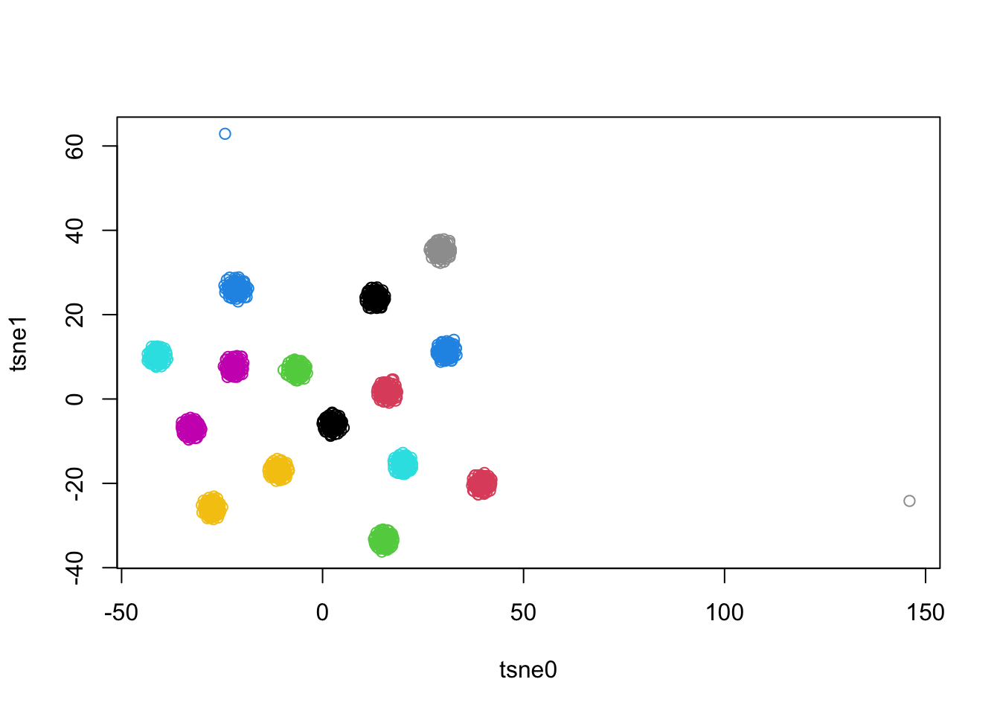
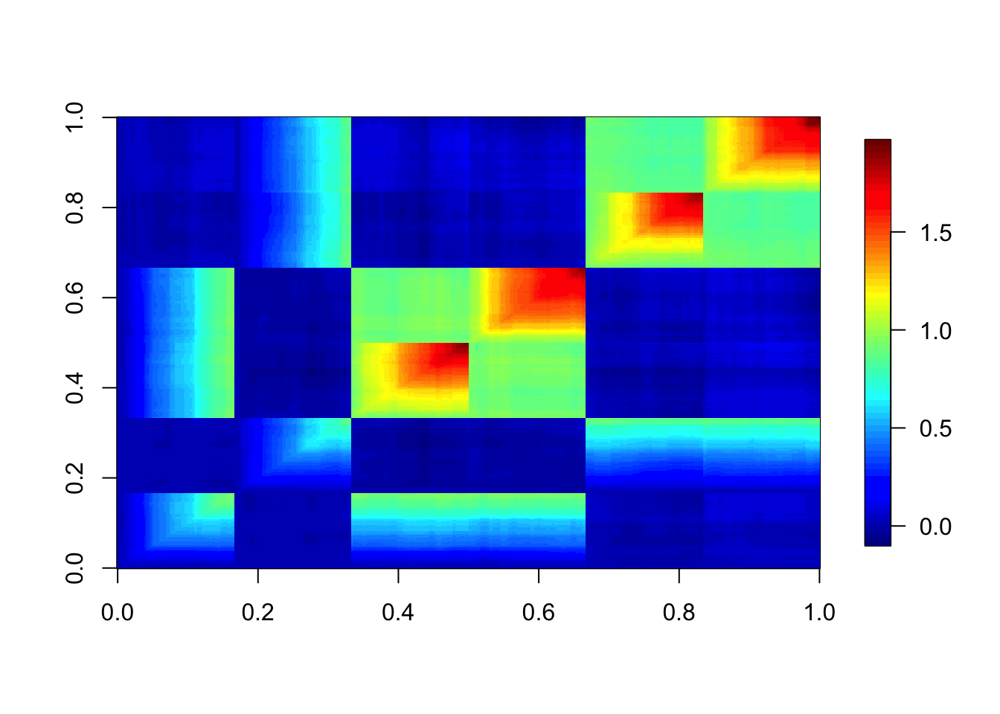
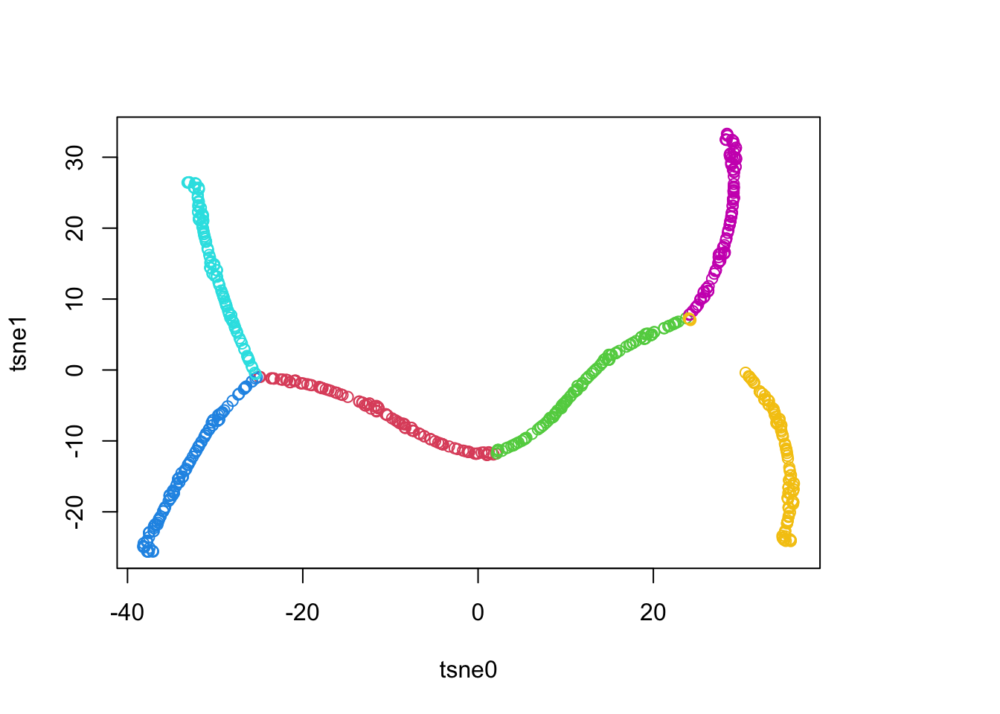

Drift and Divergence Factorizations
Sue Parkinson
2022-01-17
Last updated: 2022-01-17
Checks: 7 0
Knit directory: treedata.nosync/
This reproducible R Markdown analysis was created with workflowr (version 1.7.0). The Checks tab describes the reproducibility checks that were applied when the results were created. The Past versions tab lists the development history.
Great! Since the R Markdown file has been committed to the Git repository, you know the exact version of the code that produced these results.
Great job! The global environment was empty. Objects defined in the global environment can affect the analysis in your R Markdown file in unknown ways. For reproduciblity it’s best to always run the code in an empty environment.
The command set.seed(20220117) was run prior to running the code in the R Markdown file. Setting a seed ensures that any results that rely on randomness, e.g. subsampling or permutations, are reproducible.
Great job! Recording the operating system, R version, and package versions is critical for reproducibility.
Nice! There were no cached chunks for this analysis, so you can be confident that you successfully produced the results during this run.
Great job! Using relative paths to the files within your workflowr project makes it easier to run your code on other machines.
Great! You are using Git for version control. Tracking code development and connecting the code version to the results is critical for reproducibility.
The results in this page were generated with repository version d8a78d6. See the Past versions tab to see a history of the changes made to the R Markdown and HTML files.
Note that you need to be careful to ensure that all relevant files for the analysis have been committed to Git prior to generating the results (you can use wflow_publish or wflow_git_commit). workflowr only checks the R Markdown file, but you know if there are other scripts or data files that it depends on. Below is the status of the Git repository when the results were generated:
Ignored files:
Ignored: .DS_Store
Ignored: .Rhistory
Ignored: data/.DS_Store
Ignored: output/.DS_Store
Untracked files:
Untracked: analysis/.ipynb_checkpoints/
Untracked: analysis/BMF.ipynb
Untracked: analysis/TI testing.ipynb
Untracked: code/continuous_tree_datagen.py
Untracked: code/drift_div_factorizations.R
Untracked: code/nodetree_datagen.py
Untracked: data/ContinuousTrees/
Untracked: data/NodeTrees/
Untracked: data/dynversetree/
Untracked: figure/
Untracked: output/ContinuousTrees/
Untracked: output/NodeTrees/
Note that any generated files, e.g. HTML, png, CSS, etc., are not included in this status report because it is ok for generated content to have uncommitted changes.
These are the previous versions of the repository in which changes were made to the R Markdown (analysis/using_EBMF.rmd) and HTML (docs/using_EBMF.html) files. If you’ve configured a remote Git repository (see ?wflow_git_remote), click on the hyperlinks in the table below to view the files as they were in that past version.
| File | Version | Author | Date | Message |
|---|---|---|---|---|
| Rmd | d8a78d6 | Sue Parkinson | 2022-01-17 | update ebmf and dunverse pages |
Introduction
This analysis will explore using EBMF to detect tree structure in some synthetic data sets by computing either the drift or the divergence factorization. The functions used in this file are from code/drift_div_factorizations.R
source("code/drift_div_factorizations.R")The Data
I will be using two types of data sets in this analysis. All are based on the model of Brownian motion on a tree. The first type is data sets where the data is generated continuously along the branches of the tree. I call these data sets continuous trees. There are four continuous tree data sets in data/ContinuousTrees. The second type of data set is where the data is generated only around the nodes of the tree, which I call node trees. That is, for each node in the tree, a certain number of samples are drawn from a normal distribution centered at that node. There are nine node tree data sets in data/NodeTrees. A third type of data set of interest in some applications is where the data is only generated at the leaves of the tree. These data sets can be formed from node tree data sets by filtering on the column IsLeaf.
The function form_tree_from_file in code/drift_div_factorizations.R parses the raw data into a format that can be fed into the various methods. Below, we load one data set of each type.
nodetree <- form_tree_from_file('data/NodeTrees/NodeTree4/NodeTree4.csv')
continuoustree <- form_tree_from_file('data/ContinuousTrees/tree1.csv')One way to understand the trees is by examining their covariance matrix. For example, here is an image of the covariance matrix of the first node tree data set, where the spots in the matrix are colored by their value.
image.plot(cov(t(nodetree$matrix))) You can see that there are nested blocks in the matrix. Another way to understand the trees is by plotting a dimensionality reduction. These are saved as
You can see that there are nested blocks in the matrix. Another way to understand the trees is by plotting a dimensionality reduction. These are saved as tree$dimred.
plot(nodetree$dimred,col=1+nodetree$csv$Labels,bg="#808080") That there are clusters of points around each nodes.
In contrast, here is the covariance matrix and dimensionality reduction of one of the continuous trees.
image.plot(cov(t(continuoustree$matrix)))
plot(continuoustree$dimred,col=1+continuoustree$csv$Labels,bg="#808080")
The Methods
The functions drift_fit and div_fit in code/drift_div_factorizations.R fit drift and divergence factorizations to the data using EBMF methods. It uses point-Laplace priors for divergence loadings, point-exponential priors for drift loadings, and normal priors on the factors.
Plotting Function
Here is a python plotting function that will be used to visualize the output of the EBMF algorithms. It plots the dimensionality reduction of the data colored so that points with positive loadings are red on a particular factor, and negative loadings are blue. How red or blue a point is corresponds to the magnitude of the loading.
Below is the python code to generate the plots. I couldn’t get python to play nicely with R markdown, though, so I have manually embedded the plots.
import numpy as np
import pandas as pd
from matplotlib import pyplot as plt
def plot_ebnm_results(filename,method="drift"):
#load computed factors and loadings
if filename[-9:-1] == "NodeTree":
data = pd.read_csv(f'data/{filename + "/"+ filename[-9:] }.csv')
else:
data = pd.read_csv(f'data/{filename}.csv')
L = pd.read_csv(f"output/{filename}/EBMFfactors/{method}L.csv").values
F = pd.read_csv(f"output/{filename}/EBMFfactors/{method}F.csv").values
pve = pd.read_csv(f"output/{filename}/EBMFfactors/{method}pve.csv").values[:,0]
#sort accorinding to pve
srt = np.arange(len(pve))
#plot
plt.set_cmap('coolwarm')
numfactors = L.shape[1]
num_rows = int(numfactors/3)*3
plt.figure(figsize=(15,num_rows*5))
for k,factor,loading,pv in zip(range(numfactors),F.T[srt],L.T[srt],pve[srt]):
ax = plt.subplot(num_rows,3,k+1)
_max = max(abs(loading))
ax.scatter(data.tsne0,data.tsne1,c=loading,alpha=.7,s=3,vmin=-_max,vmax=_max)
ax.set_title(f'factor {k+1}, pve {np.round(pv,2)}')
ax.set_xlim(-50,50)
ax.set_ylim(-50,50)
plt.suptitle(filename.title() + ' '+ method.title())
plt.tight_layout(rect=[0, 0.03, 1, 0.95])
plt.show()Performance on Node Trees
We run the methods on node trees.
nodetree <- run_methods(nodetree,'output/NodeTrees/NodeTree4/EBMFfactors/',Kmax=10,eps = 2e-2)Here is what the loadings look like for node tree 4.
plot_ebnm_results("NodeTrees/NodeTree4","drift")
plot_ebnm_results("NodeTrees/NodeTree4","div")
drifttree1

divtree1
Performance on Continuous Trees
We now run the methods on continuous trees.
continuoustree <- run_methods(continuoustree,'output/ContinuousTrees/tree1/EBMFfactors/',Kmax = 10,eps = 1e-2)Here are plots of what the resulting loadings look like for tree 1.
plot_ebnm_results("ContinuousTrees/tree1","drift")
plot_ebnm_results("ContinuousTrees/tree1","div")
drifttree1

divtree1
Issues and questions to think about for drift factorization fits
- What should you choose eps to be?
- It probably makes sense to use the local false sign rate to decide if a loading should be nonzero.
- Stopping point– it doesn’t stop adding factors when it shouldn’t, unfortunately. It does with node data, but not trajectory data
- maybe some sort of spatial way of determining stopping? Like is this divergence you drawing a line in the sand, or is the split point close enough to the ancestral point that it’s a reasonable split
- What happens with non-tree-shaped data?
- If you put in non-tree-shaped data, you should get
- This factorization doesn’t quite give the true drift or divergence factorization because it gives continuous values instead of binary ones. Points that are more “specialized” have larger loadings than those that are less specialized. This doesn’t quite match up with our definition of the divergence factorization.
- This works well with node datasets up to about 3 levels of splits. It breaks down a bit for 4 levels. This is likely due to the signal/noise ratio
- When and how should you backfit? Or should we stick with a simple greedy approach?
- The drift factorization seems more reliable in general than the divergence factorization in practice, but I’m not sure why.
sessionInfo()R version 4.1.2 (2021-11-01)
Platform: aarch64-apple-darwin20 (64-bit)
Running under: macOS Monterey 12.0.1
Matrix products: default
BLAS: /Library/Frameworks/R.framework/Versions/4.1-arm64/Resources/lib/libRblas.0.dylib
LAPACK: /Library/Frameworks/R.framework/Versions/4.1-arm64/Resources/lib/libRlapack.dylib
locale:
[1] en_US.UTF-8/en_US.UTF-8/en_US.UTF-8/C/en_US.UTF-8/en_US.UTF-8
attached base packages:
[1] stats graphics grDevices utils datasets methods base
other attached packages:
[1] dequer_2.0-1 dyno_0.1.2 dynwrap_1.2.2
[4] dynplot_1.1.2 dynmethods_1.0.5 dynguidelines_1.0.1
[7] dynfeature_1.0.0 fields_13.3 viridis_0.6.2
[10] viridisLite_0.4.0 spam_2.8-0 ebnm_0.1-54
[13] forcats_0.5.1 stringr_1.4.0 purrr_0.3.4
[16] readr_2.1.1 tidyr_1.1.4 tibble_3.1.6
[19] ggplot2_3.3.5 tidyverse_1.3.1 flashier_0.2.8
[22] dplyr_1.0.7 workflowr_1.7.0
loaded via a namespace (and not attached):
[1] colorspace_2.0-2 ellipsis_0.3.2 rprojroot_2.0.2
[4] dynparam_1.0.2 fs_1.5.2 rstudioapi_0.13
[7] farver_2.1.0 graphlayouts_0.8.0 remotes_2.4.2
[10] dynutils_1.0.9 ggrepel_0.9.1 fansi_1.0.2
[13] lubridate_1.8.0 ranger_0.13.1 xml2_1.3.3
[16] codetools_0.2-18 splines_4.1.2 knitr_1.37
[19] polyclip_1.10-0 jsonlite_1.7.3 broom_0.7.11
[22] ashr_2.2-47 dbplyr_2.1.1 png_0.1-7
[25] ggforce_0.3.3 shiny_1.7.1 compiler_4.1.2
[28] httr_1.4.2 backports_1.4.1 assertthat_0.2.1
[31] Matrix_1.4-0 fastmap_1.1.0 cli_3.1.0
[34] tweenr_1.0.2 later_1.3.0 htmltools_0.5.2
[37] tools_4.1.2 igraph_1.2.11 dotCall64_1.0-1
[40] gtable_0.3.0 glue_1.6.0 reshape2_1.4.4
[43] maps_3.4.0 Rcpp_1.0.8 GA_3.2.2
[46] cellranger_1.1.0 jquerylib_0.1.4 vctrs_0.3.8
[49] iterators_1.0.13 ggraph_2.0.5 xfun_0.29
[52] ps_1.6.0 trust_0.1-8 rvest_1.0.2
[55] mime_0.12 lifecycle_1.0.1 irlba_2.3.5
[58] MASS_7.3-55 getPass_0.2-2 scales_1.1.1
[61] tidygraph_1.2.0 babelwhale_1.0.3 hms_1.1.1
[64] promises_1.2.0.1 parallel_4.1.2 yaml_2.2.1
[67] reticulate_1.23-9000 gridExtra_2.3 sass_0.4.0
[70] dyndimred_1.0.4 stringi_1.7.6 SQUAREM_2021.1
[73] highr_0.9 deconvolveR_1.2-1 REBayes_2.50
[76] desc_1.4.0 foreach_1.5.1 truncnorm_1.0-8
[79] horseshoe_0.2.0 rlang_0.4.12 pkgconfig_2.0.3
[82] evaluate_0.14 lattice_0.20-45 invgamma_1.1
[85] patchwork_1.1.1 processx_3.5.2 tidyselect_1.1.1
[88] plyr_1.8.6 magrittr_2.0.1 R6_2.5.1
[91] generics_0.1.1 DBI_1.1.2 pillar_1.6.4
[94] haven_2.4.3 whisker_0.4 carrier_0.1.0
[97] withr_2.4.3 proxyC_0.2.4 mixsqp_0.3-43
[100] modelr_0.1.8 crayon_1.4.2 lmds_0.1.0
[103] utf8_1.2.2 tzdb_0.2.0 rmarkdown_2.11
[106] grid_4.1.2 readxl_1.3.1 callr_3.7.0
[109] git2r_0.29.0 reprex_2.0.1 digest_0.6.29
[112] xtable_1.8-4 httpuv_1.6.5 RcppParallel_5.1.5
[115] munsell_0.5.0 bslib_0.3.1